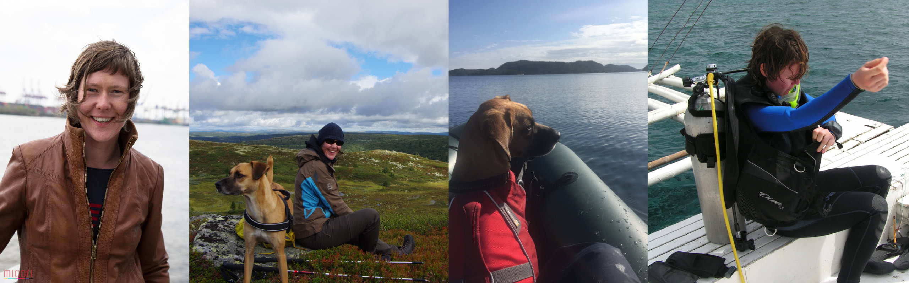

Me

I am a postdoctoral researcher currently working at the Institute of Marine Ecosystem and Fishery Science. My research interests are centered on teaching and applying marine data science closely linked to ecosystem-based management. Specifically, I like to integrate computer programming with latest advances in statistical modeling for:
- Understanding the spatio-temporal dynamics of single populations, communities and food webs in pelagic systems.
- Identifying causes and effects of sudden shifts in ecosystem structure and functioning.
- Studying the nature of non-linear dynamics in complex adaptive systems.
- Improving indicator developments and integrated ecosystem assessments for sound ecosystem-based managemen
CV
Here is a download link to my full CV [113KB].
Publications
Research articles (peer-reviewed)
Frelat R., Orio A., Casini M., Lehmann A., Mérigot B., Otto S.A., Sguotti C., Möllmann C., (2018). A three-dimensional view on biodiversity changes: spatial, temporal and functional perspectives on fish communities in the Baltic Sea. ICES Journal of Marine Science, 1-13. DOI: 10.1093/icesjms/fsy027
Otto, S.A., Kadin, M., Casini, M., Torres, M.A. & Blenckner, T. (2018): A quantitative framework for selecting and validating food web indicators. Ecological Indicators 84: 619-631.
Torres, M.A., Casini, M., Huss , M., Otto, S.A., Kadin, M. & Gårdmark, A. (2017): Food-web indicators accounting for species interactions respond to multiple pressures. Ecological Indicators 77: 67–79.
Klais, R., Otto, S.A., Teder, M., Simm, M. & Ojaveer, H. (2017): Winter–spring climate effects on small-sized copepods in the coastal Baltic Sea. ICES Journal of Marine Science 74: 1855-1864.
Frelat, R., Lindegren, M., Denker, T.S., Floeter, J., Fock, H.O., Sguotti, C., Stäbler M., Otto, S.A., Möllmann, C. (2017): Community ecology in 3D: Tensor decomposition reveals spatio-temporal dynamics of large ecological communities. PLoS One 12: e0188205.
Dickey-Collas, M., McQuatters-Gollop, A., Bresnan, E., Kraberg, A.C., Manderson, J.P., Nash, R.D.M., Otto, S.A., Sell, A.F., Tweddle, J.F., Trenkel, V.M. (2017): Pelagic habitat: exploring the concept of good environmental status. ICES Journal of Marine Science 74: 2333–2341.
Otto, S.A., Simons, S., Stoll, J.S. & Lawson, P. (2016): Making progress on bycatch avoidance in the ocean salmon fishery using a transdisciplinary approach. ICES Journal of Marine Science 73: 2380–2394.
Beaugrand, G., Conversi, A., Chiba, S., Edwards, M., Fonda-Umani, S., Greene, C., Mantua, N., Otto, S. A., Reid, P. C., Stachura, M. M., Stemmann, L., Sugisaki, H. (2015): Synchronous marine pelagic regime shifts in the Northern Hemisphere. Philosophical Transactions of the Royal Society B: Biological Sciences 370: 20130272
Downing, A.S., Hajdu, S., Hjerne, O., Otto, S.A., Blenckner, T., Larsson, U., Winder, M. (2014): Zooming in on size distribution patterns underlying species coexistence in Baltic Sea phytoplankton. Ecology Letters, 17, 1219-1227.
Otto, S.A., Llope, M., Kornilovs, G., & C. Möllmann (2014): “Interactions among density, climate and food web effects determine long term dynamics of marine zooplankton species”. Marine Ecology Progress Series, 498:73-84
Otto, S.A., Diekmann, R., Flinkmann, J., Kornilovs, G., & C. Möllmann (2014): “Habitat heterogeneity determines climate impact on zooplankton community structure and dynamics”. PLoS ONE, 9(3): e90875
Tomczak, M.T., Heymans, J.J., Yletyinen, J., Niiranen, S., Otto, S.A. & T. Blenckner (2013): “Ecological network indicators of ecosystem status and change in the Baltic Sea”. PLoS ONE, 8(10): e75439
Lindegren, M., Dakos, V., Gröger, J.P., Gårdmark, A., Kornilovs, G., Otto, S.A. & C. Möllmann (2012): “Early detection of ecosystem regime shifts: a multiple method evaluation for management application”. PLoS ONE, Vol 7(7): 1-9
Atalah, J., Otto, S.A., Anderson, M.J., Costello, M., Lenz, M. & M. Wahl (2007): “Temporal variance of disturbance did not affect diversity and structure of a marine fouling community in north-eastern New Zealand”. Marine Biology, Vol. 153(2): 199-211
Book chapter
- Diekmann, R., Otto, S.A. & C. Möllmann (2012): “Towards Integrated Ecosystem Assessments (IEAs) of the Baltic Sea - Investigating ecosystem state and historical development”. In: “Climate Impacts on the Baltic Sea: From Science to Policy”, Reckermann, M., Brander, K., MacKenzie, B.R., Omstedt A. (eds.), Springer Earth System Sciences Series, Berlin, Heidelberg, p. 161-201
Projects
“RLab 2.0 - Modular environmental statistics: Script-based analyses with R for geography, meteorology or biology students”, a research lab project funded by the University of Hamburg, 2018 - 2019
BONUS ERA-NET Project: BLUEWEBS – “Blue growth boundaries in novel Baltic food webs”, 2017 - 2020
EU-funded Innovative Training Network program: MARmaED – “MARine MAnagement and Ecosystem Dynamics under climate change”, 2015 - 2019
FUNBAZOO – “Functional Diversity of Baltic Zooplankton” funded by the federal state Hamburg, 2015 - 2017, project coordinator
ICES Science Fund: IEA-Exchange – “Exchange of knowledge for Integrated Ecosystem Assessment”, 2015 - 2016, project coordinator
“Ecosystem-based approach for developing and testing pelagic food web indicators”, project funded by the Swedish Environmental Protection Agency, 2014 - 2016, project coordinator
Stockholm University program: BEAM – " Baltic Ecosystem Adaptive Management" , 2010-2015
BONUS ERA-NET Project: AMBER – “Assessment and Modeling of Baltic Ecosystem Response”, 2009 - 2011
Media & Outreach
PhD-course lecture on General Additive Models and their application in modelling zooplankton life cycle dynamics on Youtube:
The website
All code (.Rmd) is available in the github repository saskiaotto/mds_blog. Feel free to browse, download, and even contribute by forking.

This work is licensed under a Creative Commons Attribution-ShareAlike 4.0 International License except for the borrowed and mentioned with proper source: statements.